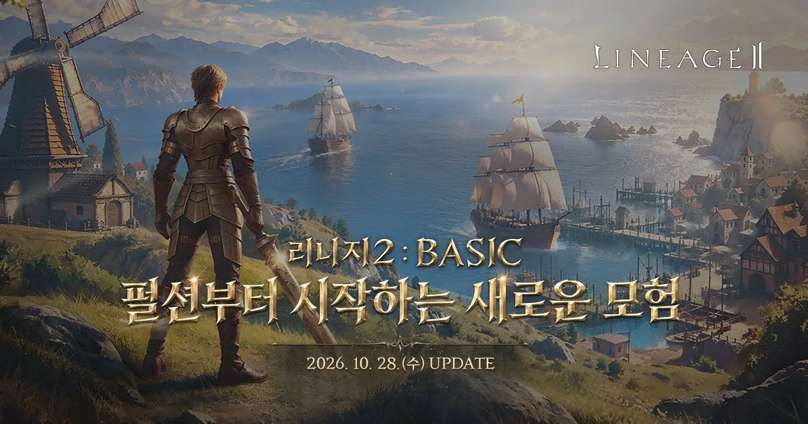

NCSOFT · 2003 ~ · BASIC 업데이트 2026.10.28
리니지2 BASIC 원격 임대
리니지2는 엔씨소프트가 2003년 정식 서비스를 시작한 PC MMORPG입니다. 2026년 10월 28일 BASIC 업데이트로 신규 서버 '글루딘'이 열리며, '기본부터, 단순하게, 느리게'를 내세워 가장 낮은 단계의 무급 장비 '펄션'부터 천천히 성장하는 초창기 감성을 되살립니다.
성장이 느린 서버일수록 오래 접속해 두는 시간이 중요합니다. 원격PC에 리니지2를 켜 두면 집 PC를 계속 켜 두지 않아도 휴대폰으로 상태를 확인하며 성장을 이어갈 수 있습니다.
글루딘 신규 서버퍼플 PC 실행저사양 · DirectX 9
리니지2 BASIC, 원격PC로 시작하는 순서
- 용도 알려주기
카카오톡으로 리니지2 글루딘 서버에서 몇 계정을 운영할지 알려주세요. - 관리자 추천
리니지2는 요구 사양이 낮은 편이라 계정 수에 맞춰 경제적인 옵션을 추천해 드립니다. - 퍼플 설치·로그인
원격PC에 퍼플(PURPLE) PC를 설치하고 본인 계정으로 로그인해 리니지2를 실행합니다. - 접속 유지·수시 확인
원격 접속 창을 닫아도 게임은 계속 켜져 있고, 휴대폰 원격 앱으로 상태만 확인하면 됩니다.
리니지2 BASIC 한눈에 보기
| 개발·서비스 | 엔씨소프트(NCSOFT) |
|---|---|
| 정식 서비스 | 2003년 |
| 장르 | PC MMORPG |
| PC 실행 | 퍼플(PURPLE) PC |
| BASIC 업데이트 | 2026년 10월 28일 |
| 신규 서버 | 글루딘 (펄션부터 시작) |
| 신규 클래스 | 패왕: 바츠 (단검 근접 전투) |
| 신규 시스템 | 커먼 크래프트 (결정체로 아이템 제작) |
리니지2 공식 PC 사양
| 항목 | 최소 | 권장 |
|---|---|---|
| CPU | 펜티엄4 3.0GHz급 이상 | 코어2듀오 6300급 이상 |
| RAM | 2GB 이상 | 4GB 이상 |
| GPU | GeForce 6600 GT / Radeon X1600 Pro급 | GeForce 7600 GT / Radeon X1800급 |
| 저장공간 | 30GB 이상 | 30GB 이상 |
| 운영체제 | Windows 8.1 이상 | Windows 10 64bit 이상 |
| DirectX | 9.0c 이상 | 9.0c 이상 |
리니지2 공식 다운로드 페이지 기준 · 실제 설치 용량은 업데이트에 따라 30GB 안팎
글루딘 서버 세부 정책은 오픈 공지를 확인하세요BASIC 업데이트는 10월 28일 적용 예정입니다. 글루딘 서버의 자동 사냥·다중 접속 관련 세부 규칙은 오픈 시점 공식 공지를 기준으로 안내해 드리며, 외부 자동화 프로그램 사용은 제재 대상이라 지원하지 않습니다.
리니지2 BASIC 추천 임대 옵션
라이젠 5700G
8코어 16쓰레드 · RAM 32GB · 내장 Vega 8
BEST · 다중8코어 16쓰레드 · RAM 32GB · 내장 Vega 8
라이젠 4350G
4코어 8쓰레드 · RAM 24GB · 내장 Vega 6
앱플레이어 다중4코어 8쓰레드 · RAM 24GB · 내장 Vega 6
리니지2는 DirectX 9 기반의 저사양 게임이라 1~2계정은 4350G로도 충분합니다. 여러 계정을 함께 켜 두려면 8코어·RAM 32GB 5700G가 가장 여유롭습니다. 계정 수를 알려주시면 대수와 옵션을 맞춰 드려요.
리니지2 BASIC 원격 임대 자주 묻는 질문
리니지2 BASIC은 무엇인가요?
2026년 10월 28일 적용되는 리니지2 업데이트입니다. 신규 서버 '글루딘', 단검을 쓰는 신규 클래스 '패왕: 바츠', 결정체로 아이템을 만드는 '커먼 크래프트'가 추가됩니다.
글루딘 서버는 기존 서버와 무엇이 다른가요?
'기본부터, 단순하게, 느리게'를 방향으로, 가장 낮은 단계의 무급 장비 '펄션'부터 천천히 성장하는 서버입니다. 이용자 간 성장 격차를 줄이고 협동 플레이와 월드 보스 레이드를 강화한다고 안내됐습니다.
리니지2를 원격PC로 하면 어떤 점이 좋나요?
성장이 느린 서버라 오래 접속해 두는 시간이 중요합니다. 원격PC는 24시간 켜져 있어 집 PC 전기요금·발열 걱정 없이 접속을 유지하고, 외출 중에도 휴대폰으로 상태를 확인할 수 있습니다.
리니지2 여러 계정을 원격PC 한 대에서 켤 수 있나요?
엔씨소프트 공지에 따르면 런처 기준 1계정에 1클라이언트가 실행되며, 다른 계정은 새로 로그인해 실행하는 방식입니다. 글루딘 서버의 다중 접속 세부 규칙은 오픈 공지를 확인한 뒤 계정 수에 맞는 옵션을 안내해 드립니다.
리니지2 사양이 높은가요?
공식 권장 사양이 코어2듀오·RAM 4GB·GeForce 7600 GT급으로 낮은 편입니다. 원격임대 전 옵션이 이 기준을 넘기 때문에 가장 경제적인 4350G로도 1~2계정은 무리 없이 실행할 수 있습니다.
사전 예약 보상도 받을 수 있나요?
사전 예약은 리니지2 공식 홈페이지에서 진행하며 '+7 펄션 교환권', '+5 청동 갑옷 교환권', 'BASIC 성장 지원팩'이 안내됐습니다. 보상은 본인 계정 기준이라 원격PC에서도 같은 계정으로 로그인하면 그대로 받을 수 있습니다.